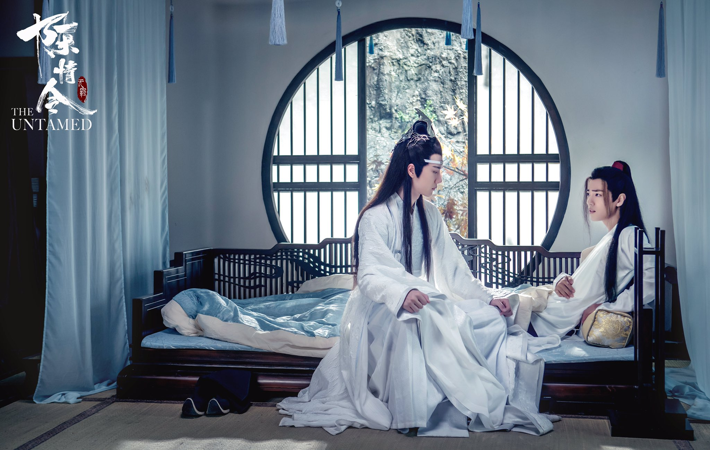
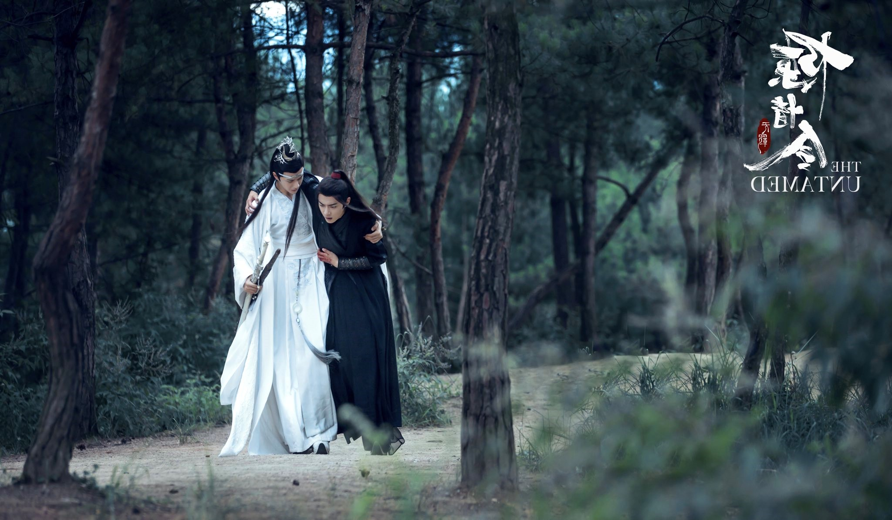
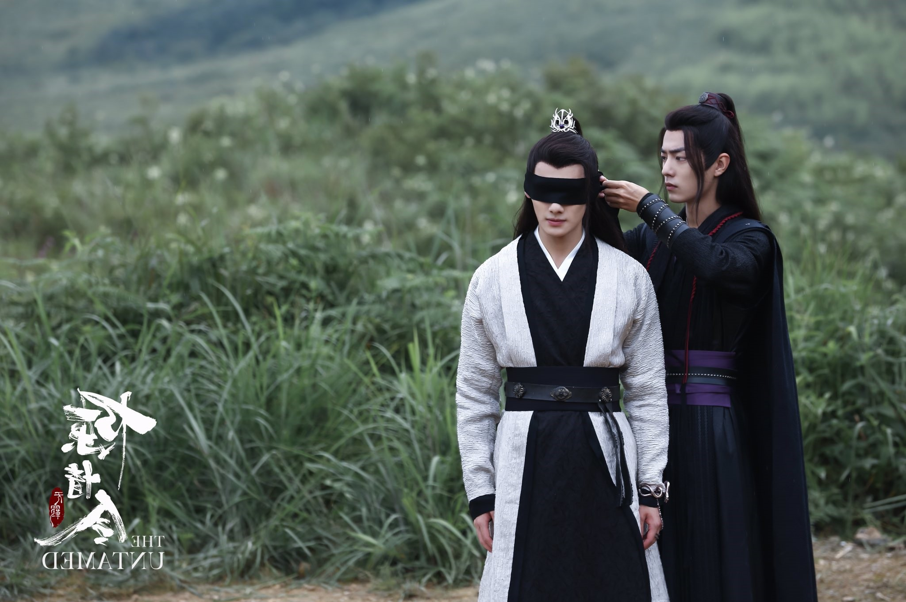
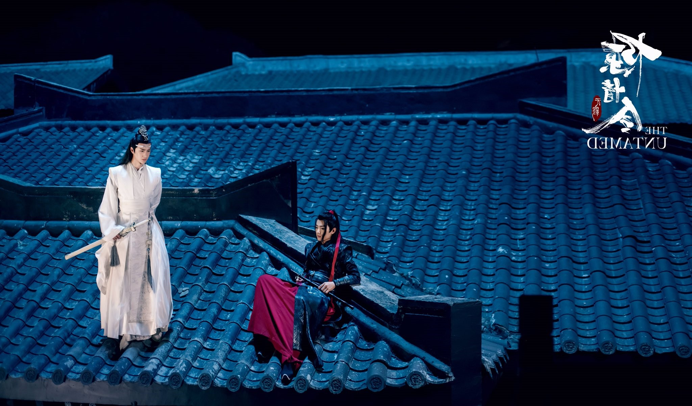
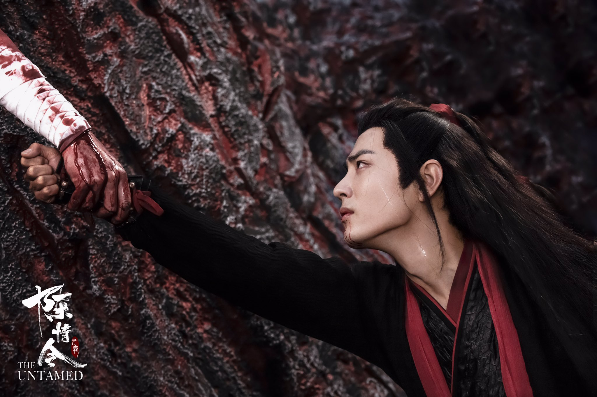

STORY

16 years in the past when Wei Wuxian had visited the Gusu Lan Sect to receive training, he met his soulmate Lan Wangji, the righteous, quiet natured man born of a noble family.

Despite the two having different personalities, Lan Wangji and Wei Wuxian eventually became good friends after experiencing many adventures and trials together.

Wei Wuxian returned to his home after finishing his training at the Gusu Lan Sect, and gave away his spiritual power to save the life of his martial brother, Jiang Cheng.

After practicing demonic cultivation, Wei Wuxian lost his reputation. Only Lan Wangji stood by him, trying every possible measure to stop him from being consumed by evil.

During the battle at Nightless City, Wei Wuxian was responsible for the death of his martial sister Jiang Yanli. Wei Wuxian committed suicide by jumping off a cliff, unable to be saved by Lan Wangji.